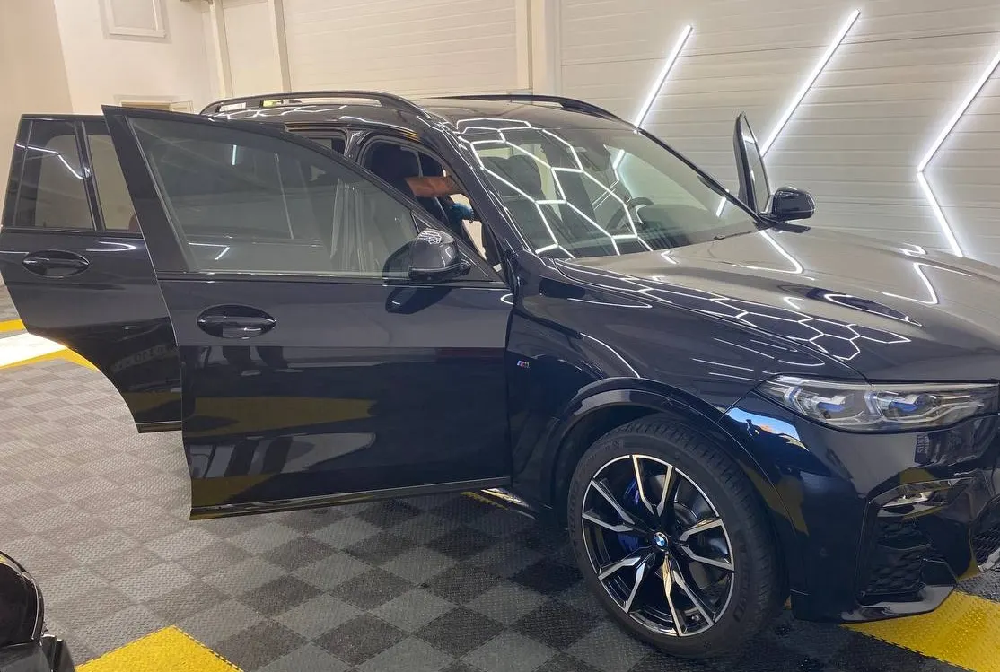
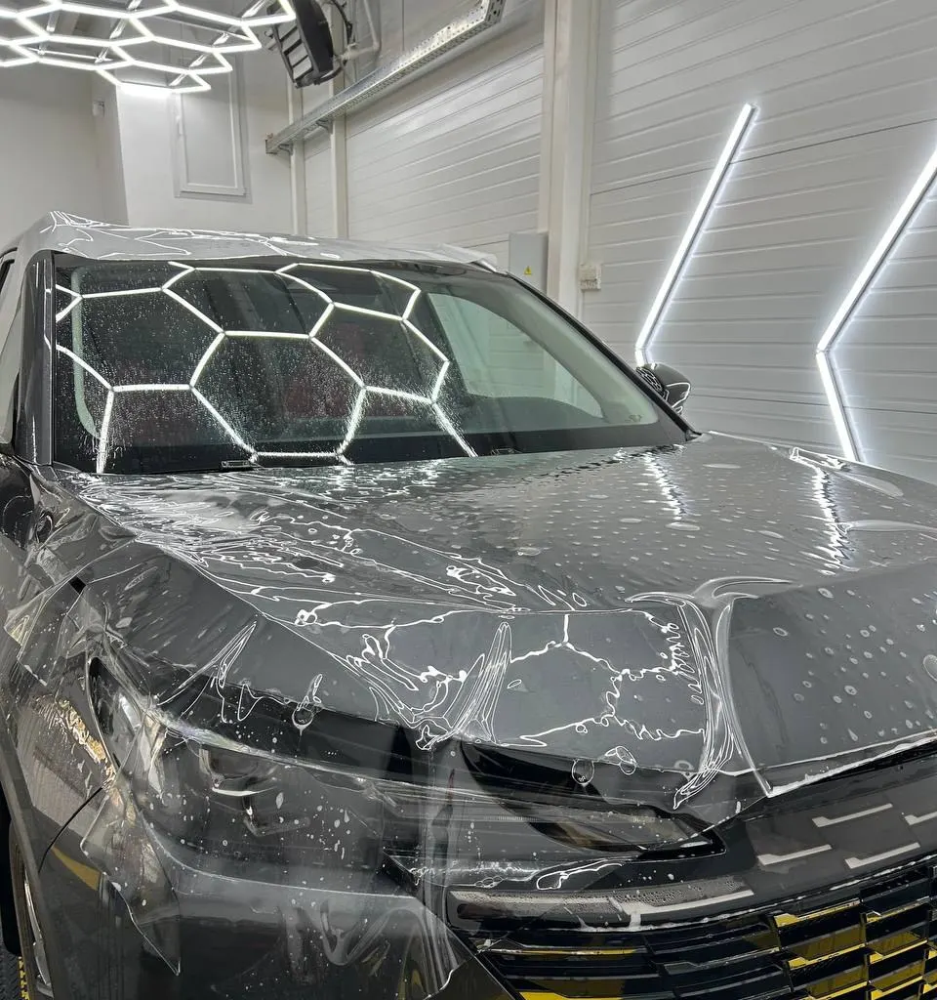
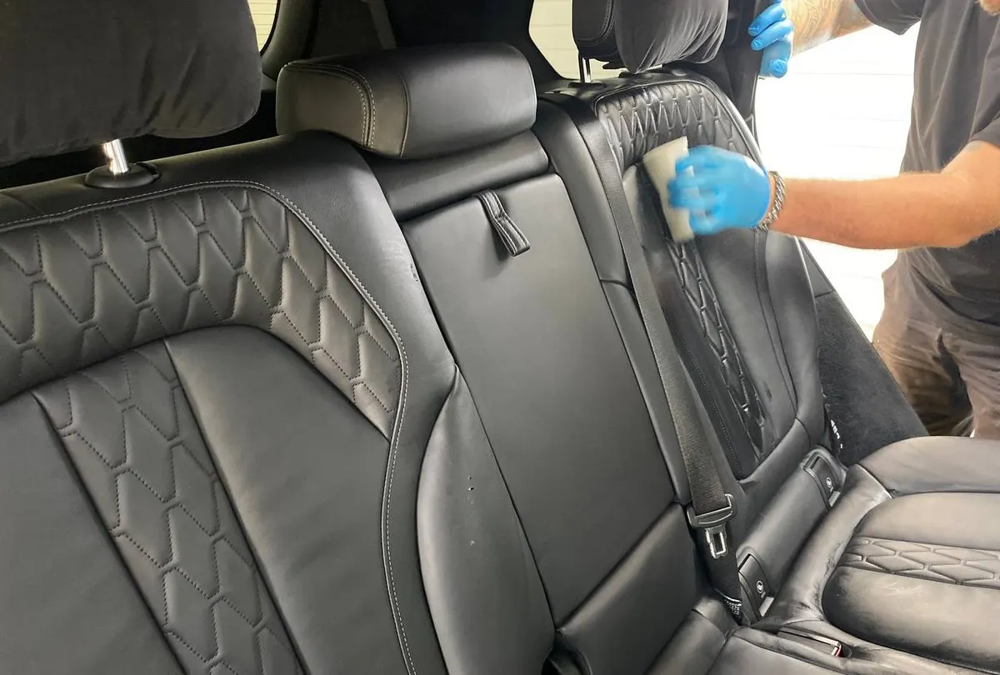
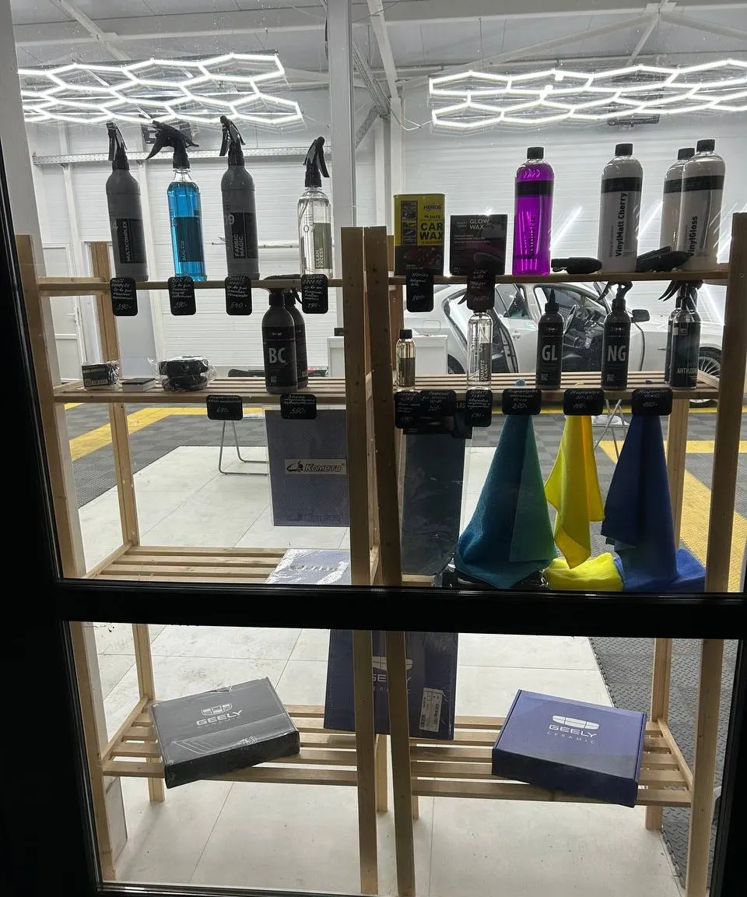

Детейлинг-мойка и салон · Калуга, Грабцевское шоссе, 35Б
Детейлинг-мойка и химчистка салона в Калуге
Детейлинг-мойка с защитным воском, трёхфазная и экспресс-мойка, химчистка и уборка салона, плёнка. Выберите день и час в форме и позвоните: цену назовут до работы.
- 4,4 на Яндекс.Картах, 7 отзывов
- Мойка, химчистка и уборка салона, плёнка
- Ежедневно с 9:00 до 19:00

Что делают и что считают отдельно
Входит
- Детейлинг-мойка: удаляют грязь, битум и железистые налёты, наносят защитный воск на кузов и диски
- Трёхфазная и двухфазная мойка кузова: активная пена, шампунь, блеск
- Химчистка и уборка салона: по отзывам, быстро и без резкого запаха
- Самообслуживание: на территории есть мойка, где можно помыться самому
Отдельно, если нужно
- Химчистка салона: цена зависит от автомобиля и состояния обивки
- Плёнка на кузов и фары: цена зависит от машины и объёма
- Полировка кузова и стёкол, ремонт кожи: указаны на карточке, цену называют при записи
- Цены мойки на карточке давно не обновлялись: итог уточняйте при записи
Услуги и цены
Мойка - по данным карточки на Яндекс.Картах. Остальное считают по машине и объёму работ, сумму называют до начала.
Мойка
- Детейлинг-мойка с нанесением специальных покрытийубирают грязь, битум и железистые налёты, наносят защитный воск, кузов и диски3 000 ₽
- Трёхфазная мойкаочистка кузова, блеск и защита покрытия, около 40 минут2 000 ₽
- Двухфазная экспресс-мойкаактивная пена и шампунь, около 30 минут1 300 ₽
Салон
- Химчистка салонаткань и кожа, цена зависит от автомобиляуточнить
- Уборка салонапылесос и влажная уборка, по отзывам около 20 минутуточнить
Плёнка и защита
- Оклейка и бронирование автомобиля плёнкойкапот, фары и зоны риска, по фото на карточкеуточнить
- Полировка кузова и стёколуслуги указаны на карточкеуточнить
Цены мойки на карточке давно не обновлялись: точную сумму для вашей машины называют при записи.
Как проходит визит
- 01
Выбрали время
Укажите услугу, день и час в форме - получится текст, который можно сказать по телефону.
- 02
Позвонили
Опишите машину и задачу, мастер назовёт цену до начала работы.
- 03
Работа в боксе
Машина стоит в светлом боксе под яркими светильниками, работа идёт на виду.
- 04
Выдача
Смотрите результат вместе с мастером, вопросы решаются на месте.



Как с нами работают
Мойка с защитным воском
Детейлинг-мойка убирает битум и железистые налёты, воск защищает кузов и диски.
Салон за один визит
Химчистка и уборка салона - клиенты пишут, что почистили быстро и аккуратно.
Цена до работы
Сумму для вашей машины называют по телефону до начала работы.
Светлый бокс
Работа идёт под яркими светильниками, в галерее на карточке 44 фото.
Отзывы с Яндекс.Карт
«Мойка самообслуживания с допуслугами - детейлинг, химчистка салона, обклеивание пленкой. Удобно расположена, всё качественно, мне понравилось. Буду периодически заезжать.»
Владимир К. · 17 сентября 2025
«Заехал к ним за уборку салона. Управились за 20 минут, всё чисто и аккуратно. Спасибо.»
Виталий Трошин · 17 сентября 2025
«Супер мойка! Сотрудники профессионалы своего дела, цены демократичные, так же можно помыться самостоятельно, оборудование все новое, удобное. Рекомендую!»
Дарья · 25 сентября 2025
Отзывы с карточки на Яндекс.Картах, без правок.
Частые вопросы
Нужна ли запись?
На карточке отмечена предварительная запись. Выберите день и час в форме выше и позвоните - так вас точно ждут.
Сколько занимает работа?
По карточке: трёхфазная мойка около 40 минут, экспресс-мойка около 30. По отзывам, уборка салона заняла около 20 минут. Остальное называют при записи.
Что делают с салоном?
Химчистку и уборку салона, по отзывам - быстро и аккуратно. На карточке также указаны ремонт кожи и полировка стёкол.
Можно ли помыть машину самому?
Да, на территории работает мойка самообслуживания - об этом пишут клиенты. Детейлинг-мойку и услуги по салону делают мастера.
Где вы находитесь?
Грабцевское шоссе, 35Б, Калуга. На карточке отмечены парковка, оплата картой и Wi-Fi.
Выберите день и час
- Адрес
- Грабцевское шоссе, 35Б, Калуга
- Часы
- ежедневно 9:00-19:00
- Телефон
- +7 (903) 026-16-65